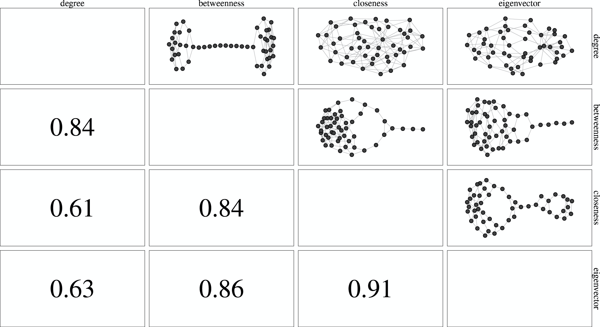
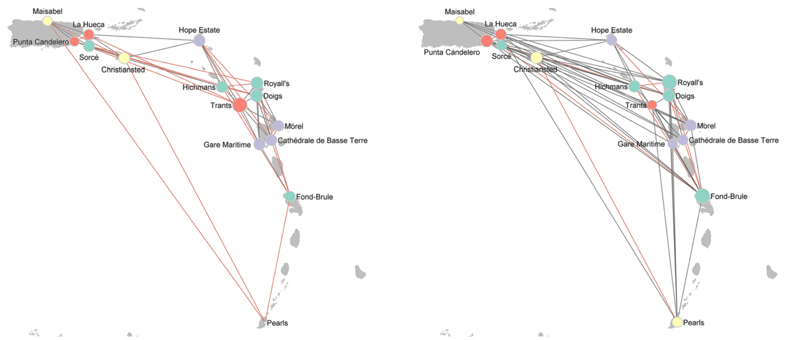

About me
Projects
Publications
Talks
Blog
Teaching
Categories
All
(15)
archaeology
(5)
centrality
(2)
data privacy
(1)
disclosure control
(1)
entropy
(4)
ergm
(2)
hypergraph
(1)
multigraph
(6)
multivariate statistics
(2)
sna survey
(1)
teaching
(1)
Publications

The interplay of structural features and observed dissimilarities among centrality indices
The association of network topology with dissimilarities of indices is assessed
Goodness of fit tests for random multigraph models
Goodness of fit tests for different probability models for random multigraphs.
Multiplexity Analysis of Networks using Multigraph Representations
A method for performing multiplexity analysis in social networks with several node covariates is presented.
Social Network Analysis
A review chapter on social network analysis aimed towards undergraduate students.

A Framework for Reconstructing Archaeological Networks using Exponential Random Graph Models
We present a general framework in which we combine exponential random graph models with archaeological substantiations of mechanisms for network formation.
Reconstructing Archaeological Networks with Structural Holes
We consider exponential random graph models, and show how they can be applied to reconstruct networks coherent with Burt’s arguments on closure and structural holes.
Random Multigraphs and Aggregated Triads with Fixed Degrees
New combinatorial results are given for the global probability distribution of edge multiplicities and its marginal local distributions of loops and edges.
Hypergraph Representations: A Study of Carib Attacks on Colonial Forces, 1509-1700
We perform a centrality analysis of a directed hypergraph representing attacks by indigenous peoples from the Lesser Antilles on European colonial settlements, 1509-1700.
Investigating Human Geographic Origins using Dual-Isotope (87Sr/86Sr, d18O) Assignment approaches
We develop and test more standardized and quantitative approaches to geographic assignment of individual origins using multivariate isotopic data.
Analyzing Local and Global Properties of Multigraphs
The local and global structures of undirected multigraphs under two random multigraph models are analyzed and compared.
Nation Building and Social Signaling in Southern Ontario AD 1350-1650
Social network analysis is used to demonstrates the signaling practices reflecting regional patterns.
Multivariate Entropy Analysis of Network Data
We show how it is possible to systematically check for tendencies in data, such as independencies or conditional independencies, using multivariate entropies.
Data Protection for Online Social Networks and P-Stability for Graphs
We consider different approaches for data privacy in online social networks and for developing graph protection.
A Multigraph Approach to Social Network Analysis
The theoretical background for analyzing multivariate social networks using multigraph representations is introduced.
Complexity of Families of Multigraphs
Complexity measured for multigraphs are specified and their applicability is discussed.
No matching items